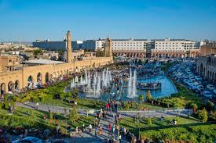
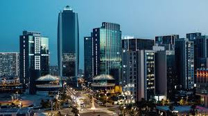
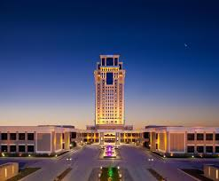
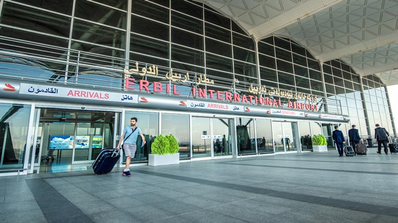

Erbil

Introduction to Erbil and Its Citadel
Erbil, also spelled Hewlêr, is one of the oldest continuously inhabited cities in the world, located in the Kurdistan Region of northern Iraq. With a history stretching back over 6,000 years, Erbil has been a crossroads of ancient civilizations including the Sumerians, Assyrians, Babylonians, and Persians. Today, it is a thriving modern city and a key cultural and economic hub in the region.
At the heart of Erbil lies its most iconic landmark — the Erbil Citadel. Perched on a large, oval-shaped hill rising about 30 meters above the surrounding city, the Citadel is a UNESCO World Heritage Site and a symbol of the city's deep historical roots. Archaeological evidence shows that the Citadel has been inhabited since at least the 5th millennium BCE, making it one of the longest continuously occupied sites in the world.

Empire Square is one of the most prominent and modern landmarks in Erbil, the capital of the Kurdistan Region of Iraq. Located in a bustling and rapidly developing area of the city, Empire Square is part of the Empire World project, a large-scale commercial and residential development that reflects Erbil’s transformation into a modern urban center.

Located in the heart of Erbil’s modern business district near Empire Square, Divan Erbil is a premier 5-star hotel in the Kurdistan Region of Iraq. Renowned for its elegant design, top-tier security, and world-class hospitality, it is the preferred destination for global leaders, international delegations, and high-profile business travelers.
Built by the Turkish Divan Group, the property features 228 luxury rooms and suites, multiple restaurants, indoor pool, and extensive meeting facilities—making it a standout “business hotel” in Iraq, honored six years in a row.

Erbil International Airport, officially coded EBL / ORER, is the primary gateway for the Kurdistan Region of Iraq. Located about 7 km northwest of Erbil center, it opened in stages between 2003 and 2011, built on top of a former military air base.
Key facts
- Runway: 4,800 m long, 75 m wide — one of the eight longest globally.
- Passenger capacity: Terminal handles up to 4.5 million travelers annually.
- 2023 traffic:Passenger numbers: 2.084 million (+384 k from 2022)
- Daily flights: ~100–105, including direct European routes, making it the only Iraqi airport currently with direct Europe flights
- Cargo throughput: ~2,000 tonnes/month, expected to reach 4,000 tonnes once new cargo terminal (85 % complete) opens.
- Connectivity: ~270 destinations served by 21+ airlines, linking to Baghdad, Dubai, Istanbul, European capitals, and more
- In June 2024, EIA received an ICAO score of 80+ — a testament to quality and compliance
- A robust security apparatus protects against regional threats; recently it sustained occasional disruptions from nearby militia drone/rocket activity.
- Record day: On Dec 31, 2024, the airport saw 4,826 passengers arriving and departing in a single day
Wikipedia